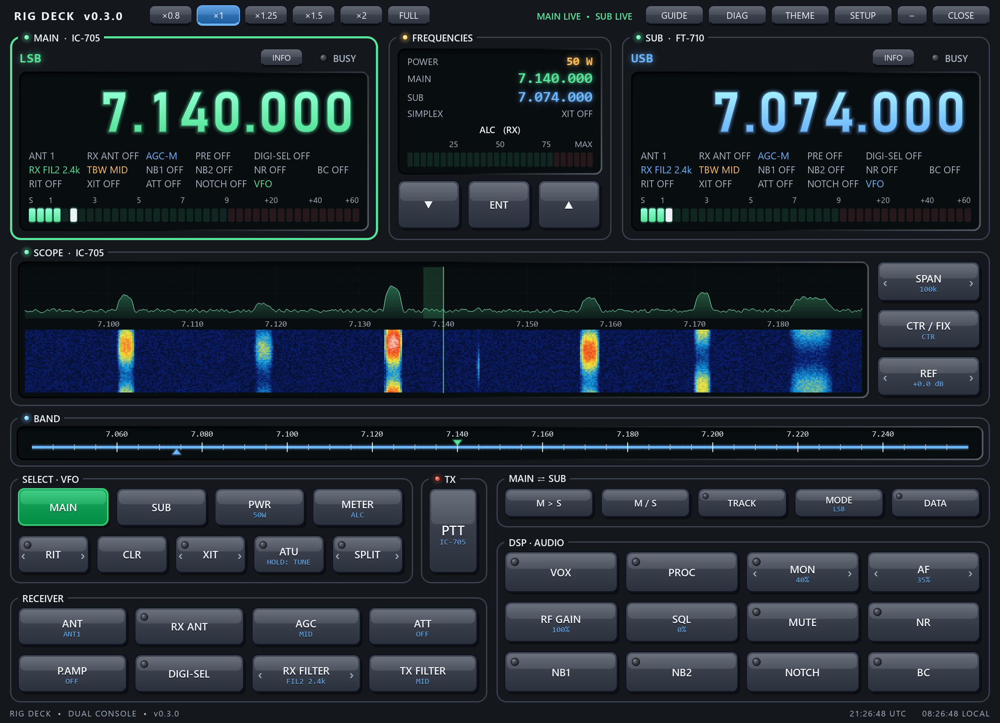
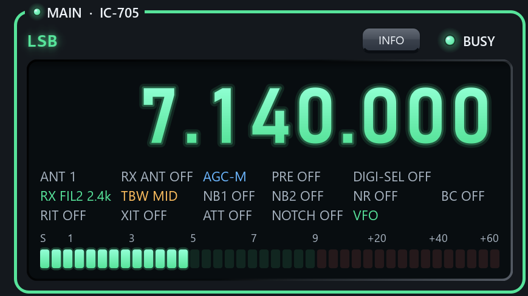

RIG DECK
A free Windows console for two radios at once. One window, two radio panels, a shared band scale, a spectrum scope and a button deck that works on whichever radio is selected.

A quick tour
Pick a part of the window to see it. These are real screenshots of the program, running on simulated radios.

What it does
Run an HF rig and a VHF/UHF rig side by side, and share them with your digital-mode software.
Two radios, one window
MAIN and SUB panels with big smooth frequency readouts, meters and a shared band scale. Wheel over a digit to tune it.
Spectrum scope
The radio's own scope streamed over CI-V as a trace over a waterfall (IC-705, IC-7610). Click to tune.
One deck for both
Buttons follow the selected radio's own names and are greyed when it lacks them. M > S, M / S and TRACK link the two radios.
Share with JTDX and friends
A built-in rigctld-style network server, so JTDX, WSJT-X, fldigi, FreeDV and loggers connect to Rig Deck instead of fighting over the COM port. No virtual COM ports needed.
Safe by design
One transmitter at a time, an automatic PTT time-out, and USB keying lines held low so a radio is never keyed by accident.
Looks the part
Five themes, ×0.8 to ×2 zoom, full screen, and a freely resizable window that remembers its size.
Supported radios
Anything Hamlib supports works too, through its rigctld.
| Connection | Radios |
|---|---|
| Icom CI-V | IC-7300, 7300MK2, 7610, 7760, 7850/7851, 7800, 7700, 7600, 7410, 7200, 705, 7100, 7000, 9700, 9100, 905 |
| Yaesu CAT | FT-710, FTDX10, FTDX101D/MP, FT-991A, FT-991, FT-891 |
| Hamlib | Any radio Hamlib supports (needs Hamlib's rigctld installed) |
Honest status: the IC-705, FT-710 and FT-991A were bench-tested on the receive side only. The other models are written from Hamlib's driver sources and have not been tried on real radios. See the README.
Get started
- Download
RigDeck-0.3.0-windows.zipfrom the latest release and unzip it anywhere. - Run
Rig_Deck.exe. The program is not code-signed, so Windows may say "Windows protected your PC". Click More info, then Run anyway. - Click SETUP, choose the radio and USB port for each side, and Save. Or run
Rig_Deck.exe --demoto try it with simulated radios. - Read the Rig Deck User Guide.pdf in the zip, or press GUIDE in the program.
Prefer Python? pip install -r requirements.txt then python main.py.
Privacy
Rig Deck has no server and no telemetry. Its only internet use is an optional, switch-off-able check of GitHub for a newer release. The author receives nothing from your copy.
Local by default
The share server listens on 127.0.0.1 only, so only programs on your own PC can reach it.
One settings file
Everything is stored in %APPDATA%\RigDeck\config.json.
One update request
A single GET of GitHub's "latest release" record shortly after start. Nothing is downloaded or installed.
Disclaimer
Please read this before using Rig Deck. The full text is in DISCLAIMER.md.
No warranty
Rig Deck is a free hobby project provided "as is", without warranty of any kind, express or implied, under the MIT License. You use it entirely at your own risk.
Limitation of liability
To the maximum extent permitted by law, the author is not liable for any loss or damage of any kind arising from the use of, or inability to use, Rig Deck, including damage to radios, amplifiers or antennas, unintended transmissions, interference, licence infringements, injury or property damage.
It can transmit
Rig Deck can key your transmitter and change any radio setting. Check power, mode, frequency and antenna first, and test at low power into a dummy load. You are solely responsible for what your station transmits and for operating within your licence and your country's regulations. Not for safety-of-life use.
Largely untested on real radios
Only the IC-705, FT-710 and FT-991A have been bench-tested, and only on the receive side. Other models are implemented from published documentation.
Third-party software
Built with PySide6/Qt and pyserial, and can use Hamlib's rigctld. Not affiliated with or endorsed by any radio manufacturer or library author. Trademarks belong to their owners.